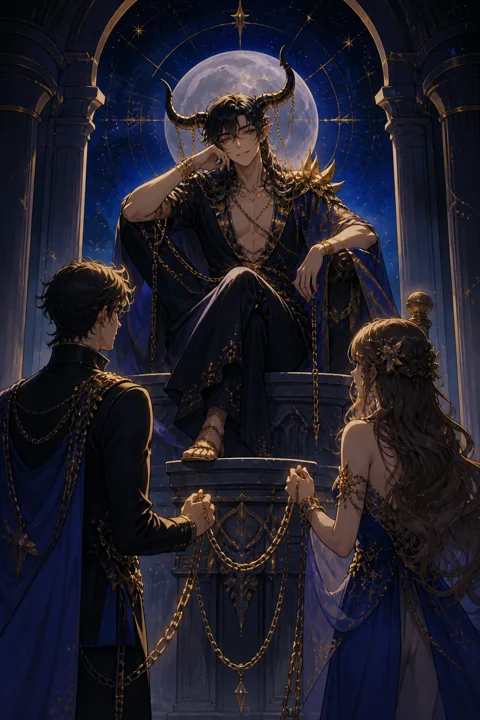

XV 악마 카드 — 익숙한 사슬을 알아보는 때
악마 카드 한눈에 보기
악마 카드 상징 읽기

동네보살의 카드 그림은 전통 라이더–웨이트 덱의 뜻을 새 그림으로 옮긴 것입니다. 아래 상징 설명은 전통 덱의 그림을 기준으로 합니다.
그림 한가운데에는 박쥐 날개와 염소 뿔을 가진 존재가 받침돌 위에 앉아 있습니다. 치켜든 오른손은 연인 카드의 축복을 비틀어 흉내 낸 몸짓으로, 겉모습은 그럴듯하지만 속은 뒤집힌 약속을 뜻합니다.
아래에는 뿔과 꼬리가 돋은 남녀가 목에 사슬을 걸고 서 있습니다. 눈여겨볼 점은 그 사슬이 헐렁해서 손만 들면 벗을 수 있다는 것입니다. 묶어두는 힘은 쇠가 아니라 스스로의 선택이라는 메시지입니다.
악마의 왼손에 거꾸로 들린 횃불은 빛을 땅으로 향하게 해, 지혜가 욕망을 태우는 연료로만 쓰이는 상태를 보여줍니다. 이마의 역오각별은 정신보다 물질과 본능이 위에 올라선 질서를 상징합니다.
발밑의 검은 받침돌은 절반만 보이는 육면체로, 온전한 진실이 아니라 반쪽짜리 현실에 사람들이 매여 있다는 점을 은유합니다. 남자의 꼬리 끝에는 불꽃이, 여자의 꼬리 끝에는 포도송이가 달려 있어 각자가 탐닉하는 욕망의 종류를 암시합니다.
악마 카드 정방향 뜻
정방향 악마는 알면서도 놓지 못하는 것이 삶을 쥐고 있다는 신호입니다. 그것은 사람일 수도, 돈일 수도, 매일 반복하는 습관일 수도 있습니다. 중요한 것은 이 카드가 벌을 내리는 카드가 아니라 거울에 가깝다는 점입니다.
질문하신 분은 이미 무엇이 자신을 붙잡는지 짐작하고 계실 가능성이 큽니다. 다만 그 대상이 주는 즉각적인 만족이나 안도감이 커서, 끊는 순간의 허전함이 더 두렵게 느껴질 뿐입니다.
이 카드가 나왔다면 당장 모든 것을 끊어내기보다 패턴을 적어보는 것부터 시작해 보시길 권합니다. 언제, 어떤 기분일 때 그쪽으로 끌려가는지 알게 되면 사슬의 고리가 하나씩 보이기 시작합니다.
또 이 카드는 스스로를 탓하게 만드는 목소리에도 주의하라고 말합니다. 자책이 깊어질수록 오히려 그 대상에 더 기대게 되는 악순환이 생기기 쉽기 때문입니다. 작은 거리 두기를 하루라도 해냈다면 그것을 분명한 진전으로 인정해 주세요.
악마 카드 역방향 뜻
역방향 악마는 오랫동안 목에 걸려 있던 사슬이 스르르 풀리는 장면으로 읽는 전통이 강합니다. 그래서 이 카드는 뒤집혀 나왔을 때 오히려 반가운 소식이 되는 경우가 많습니다.
무언가에 끌려다니던 자신을 한 발 떨어져서 바라보게 되고, 그동안 왜 그렇게 매달렸는지 담담하게 이해하게 되는 흐름입니다. 소모적인 관계에서 거리를 두거나, 손해만 남기던 지출 습관을 바로잡는 계기가 찾아올 수 있습니다.
다만 풀려나는 과정이 늘 매끄럽지는 않습니다. 익숙했던 것을 내려놓으면 한동안 허전함이 밀려오고, 그 틈을 타 옛 패턴이 다시 손짓하기도 합니다. 이때 스스로를 탓하기보다 벗어나려는 방향 자체를 인정해 주는 것이 변화를 오래 지키는 길입니다. 벗어난 뒤에는 그 빈자리를 새로운 관심사나 믿을 만한 사람과의 시간으로 채워 두시면 되돌아갈 이유가 자연스럽게 줄어듭니다.
연애에서 악마 카드
솔로라면 강렬하게 끌리지만 어딘가 불편한 사람이 곁에 있을 수 있습니다. 설렘과 긴장이 뒤섞인 감정은 매력적이지만, 만날수록 자존감이 깎이는 느낌이 든다면 그 끌림의 정체를 차분히 살펴볼 필요가 있습니다. 외로움을 채우려고 조건을 낮추고 있지는 않은지도 점검해 보세요.
연애 중이라면 서로에게 지나치게 얽혀 있는 상태를 비춥니다. 질투, 연락 강요, 헤어지자는 말을 반복하면서도 떠나지 못하는 흐름이 대표적입니다. 이 카드는 관계를 당장 끝내라는 뜻이 아니라, 사랑이라고 믿었던 것 중 얼마만큼이 두려움과 습관이었는지 들여다보라는 권유입니다. 각자의 시간을 조금씩 되찾을 때 관계가 숨을 쉬기 시작합니다. 연락 횟수로 사랑을 확인하려는 습관을 내려놓고, 서로를 믿고 기다리는 연습을 시작해 보시길 권합니다.
재회·속마음 질문에서 악마 카드
재회를 묻는 자리에서 악마가 나오면, 상대와의 인연이 쉽게 끊어지지 않는 끈적한 성질을 띠고 있다는 뜻으로 읽힙니다. 상대 역시 당신을 완전히 잊지 못하고 가끔 생각이 나서 연락을 망설이는 마음이 있을 수 있습니다.
다만 그 감정이 그리움인지 소유욕인지는 구분해야 합니다. 다시 만나더라도 예전의 다툼과 집착이 그대로 반복될 여지가 크기 때문입니다. 돌아가고 싶은 이유가 그 사람 자체인지, 혼자가 된 불안인지 먼저 스스로에게 물어보시길 바랍니다. 그 답이 분명해진 다음에 움직여도 늦지 않으며, 예전과 다른 규칙을 세울 수 있을 때에만 다시 시작할 의미가 생깁니다.
일·금전에서 악마 카드
일과 돈에서는 눈앞의 이익이 판단을 흐리는 구간입니다. 유난히 수익이 좋아 보이는 제안, 계약서에 모호한 조건이 붙은 거래, 빨리 결정하라고 재촉하는 분위기가 있다면 한 번 더 따져보셔야 합니다.
직장에서는 연봉이나 안정 때문에 마음에 맞지 않는 자리에 묶여 있다고 느끼실 수 있습니다. 그 불만 자체는 자연스럽지만, 떠날 수 없다고 단정하기 전에 실제로 필요한 준비가 무엇인지 목록으로 만들어 보면 사슬이 생각보다 헐겁다는 것을 알게 됩니다. 충동 구매나 체면을 위한 지출이 늘고 있다면 한 달 치 소비 내역을 점검해 보는 것도 좋습니다. 무엇보다 손쉬운 지름길을 약속하는 말일수록 서면으로 조건을 확인하고, 믿을 만한 주변 사람에게 한 번 더 의견을 구하는 습관이 판단을 지켜 줍니다.
악마 카드는 예일까 아니오일까
지금 끌리는 선택이 유혹이나 집착에서 나온 것일 수 있어 정방향에서는 보류나 아니오 쪽으로 읽습니다. 역방향이면 벗어나려는 결정에 한해 예로 기울어집니다.
자주 묻는 질문
악마 카드 역방향은 나쁜 뜻인가요?
역방향 악마는 오랫동안 목에 걸려 있던 사슬이 스르르 풀리는 장면으로 읽는 전통이 강합니다. 그래서 이 카드는 뒤집혀 나왔을 때 오히려 반가운 소식이 되는 경우가 많습니다.
악마 카드가 연애 질문에 나오면요?
솔로라면 강렬하게 끌리지만 어딘가 불편한 사람이 곁에 있을 수 있습니다. 설렘과 긴장이 뒤섞인 감정은 매력적이지만, 만날수록 자존감이 깎이는 느낌이 든다면 그 끌림의 정체를 차분히 살펴볼 필요가 있습니다. 외로움을 채우려고 조건을 낮추고 있지는 않은지도 점검해 보세요.
타로 카드는 어떻게 뽑나요?
타로 카드 페이지에서 카드를 섞으면 메이저 아르카나 22장이 펼쳐집니다. 마음이 가는 세 장을 고르면 과거·현재·미래 자리에 놓이고, 한 장씩 뒤집어 자리와 방향에 맞는 풀이를 읽습니다. 정방향과 역방향은 섞는 순간 정해집니다.